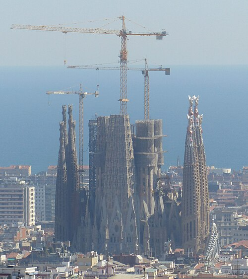
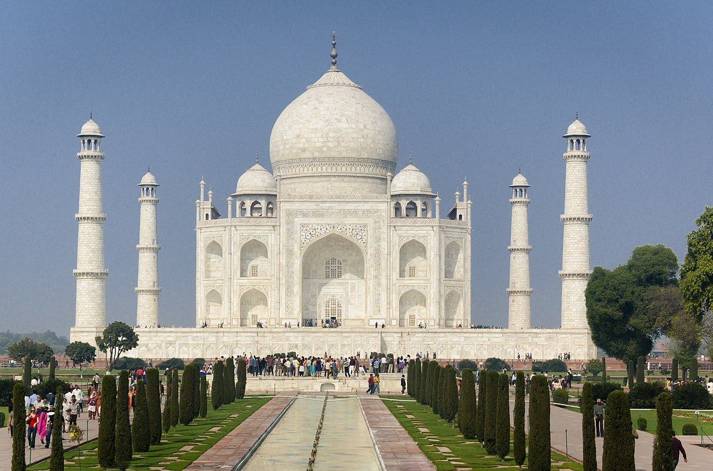
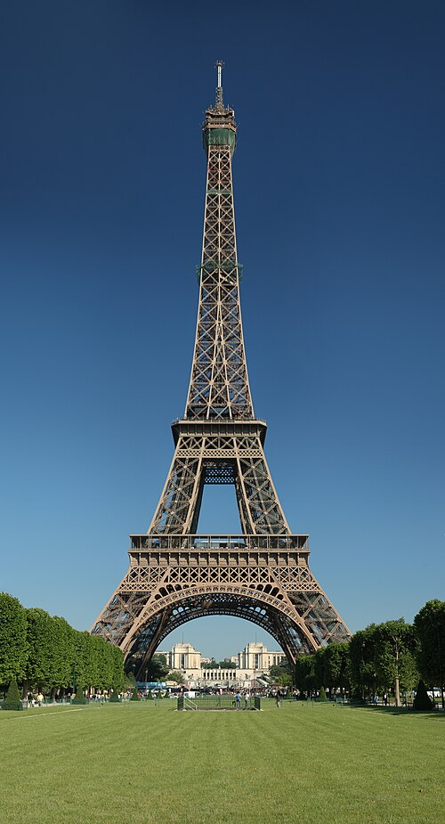

Lotus Temple, India
A Baha'i House of Worship (1986), designed to resemble a blooming lotus flower. It symbolizes purity and unity.

Sagrada Família, Spain
Antoni Gaudí’s monumental work, blending Gothic and Art Nouveau styles. Under construction since 1882, it remains a symbol of innovation.

Palace of Versailles, France
An iconic symbol of French Baroque architecture, built by Louis XIV, featuring the grand Hall of Mirrors and expansive gardens.

Taj Mahal, India
Commissioned by Shah Jahan in 1632, this Mughal mausoleum is a symbol of eternal love, blending Persian and Indian architecture.

Eiffel Tower, France
Built by Gustave Eiffel in 1889 for the World’s Fair, this wrought-iron structure is a global landmark and a symbol of Paris.